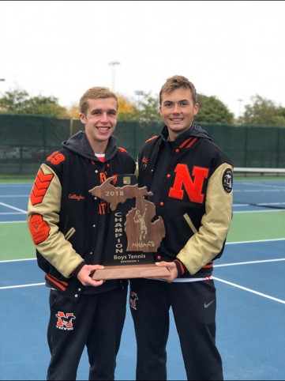

Building the logic that runs
the assembly line.
I'm an Industrial Engineering student at Wayne State University and an automation engineer who programs the PLCs, HMIs, and inspection systems that keep automotive production lines running — and catches the failures that shouldn't reach the next station.
- Focus
- Automation & controls
- Program
- B.S. Industrial Engineering, exp. 2027
- Certifications
- Six Sigma Green Belt GCCH-1 GCCS-2
Experience
Three roles, three different floors — a control room, a courtside, and a lumber yard.
-
Jan 2023 – Aug 2023 · May 2024 – May 2025 · May 2026 – Aug 2026
Automation Engineer
Control System Integrators — Lansing, MI
- Programmed PLC logic and HMIs for automotive-industry projects with customers including GM Toledo and GM LDT.
- Built new inspection logic for a camera system at GM Lansing Delta Township to raise failure detection on final vehicle assembly.
- Commissioned the AMR traffic system at GM Toledo, coordinating autonomous mobile robots that transport transmissions through truck and van manufacturing.
-
Aug 2019 – Oct 2019
Boys Freshman JV Tennis Coach
Northville High School — Northville, MI
- Coached a freshman tennis team through practices and matches against nearby schools.
- Led practices as lead instructor and built a team-first culture for first-year players.
-
May 2021 – Jun 2021
Forklift Driver
Guthrie Lumber Company — Livonia, MI
- Packaged customer orders for delivery trucks and kept the yard organized.
- Operated a forklift to fill orders on time and keep material moving to schedule.
Education
Wayne State University
Bachelor of Science, Industrial Engineering
Expected graduation: May 2027
Completed coursework
- Quality Control
- Engineering Economy
- Work Design
- Six Sigma
- Systems Simulation
Current coursework
- Engineering Capstone
- Digital Automation
- Operations Research
- Data Science & Analysis
- Systems Engineering
Skills
Programming
- Python
- MATLAB
- C++
Controls & automation
- Studio 5000
- TIA Portal
- FTView
Certifications
- Six Sigma Green Belt
- GCCH-1
- GCCS-2
About Me

I love to get outside and play tennis or basketball. I also am an avid reader and like to catch a local play or musical. I also like board games like Settlers of Catan and getting together with family.
Let's talk
Open to automation, controls, and industrial engineering roles and internships.